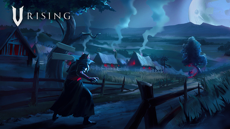
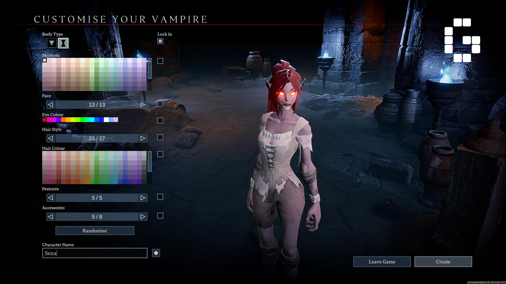
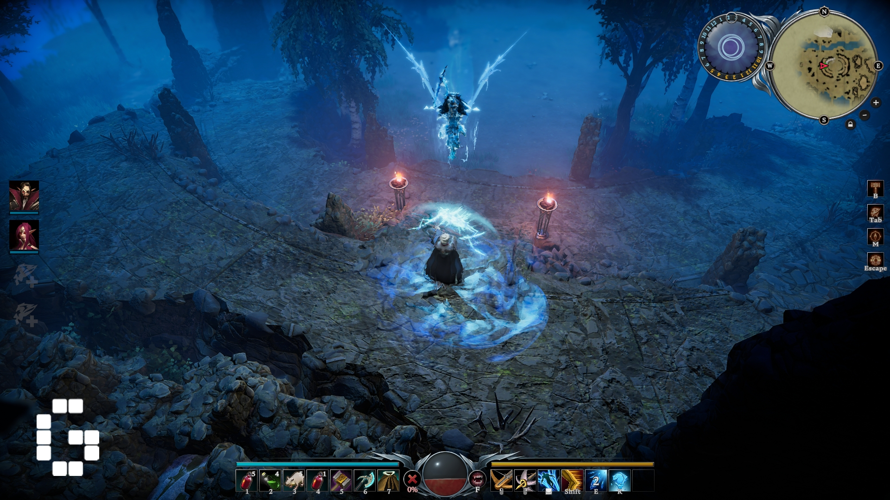

Об игре
Отправьтесь в уникальное приключение в вампирском ролевом экшене с элементами выживания.Ваш персонаж пробуждается от векового сна, ослабленный и терзаемый жаждой крови. Исследуйте открытый мир тёмного фэнтези, где вам предстоит столкнуться с людьми, кошмарами и, что еще хуже... смертоносным солнечным светом. Обретите могущество и поработите мир живых.Охотьтесь самостоятельно или соберите клан. В V Rising можно играть в одиночку, в кооперативном режиме или в многопользовательской сетевой игре.
ВАС ЖДЕТ ГОТИЧЕСКИЙ ОТКРЫТЫЙ МИР
Посещайте густые леса, просторные сельские районы, суровые морозные земли и темные пещеры, чтобы добыть ценные ресурсы. Разоряйте деревни, находите призрачные города и проникайте во владения сверхъестественных чудовищ.
 